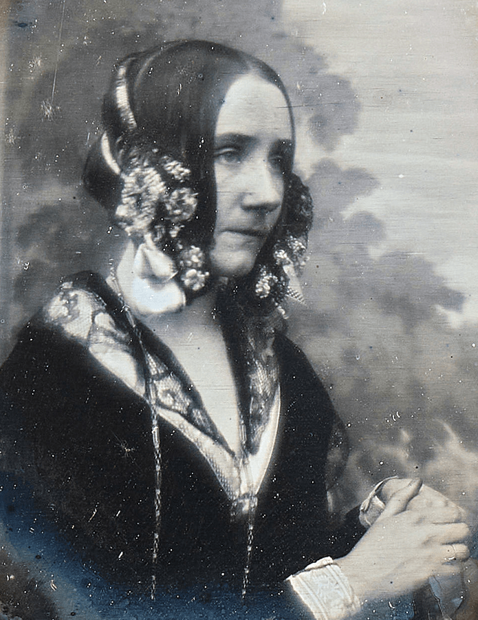
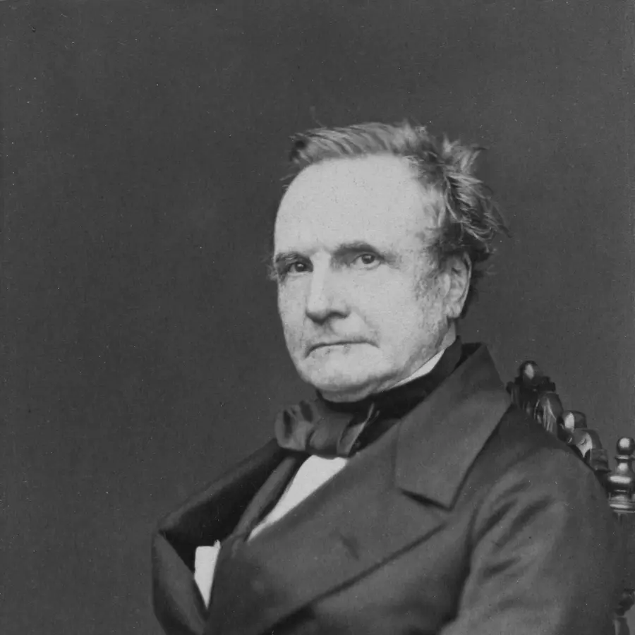
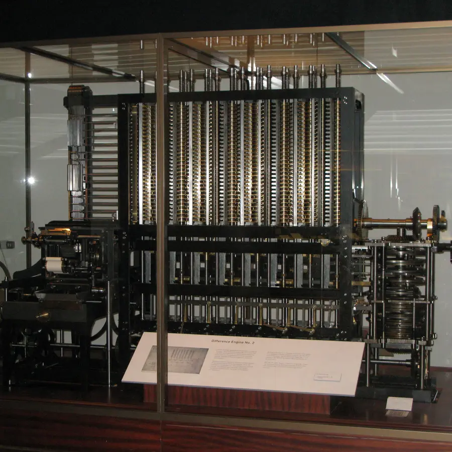
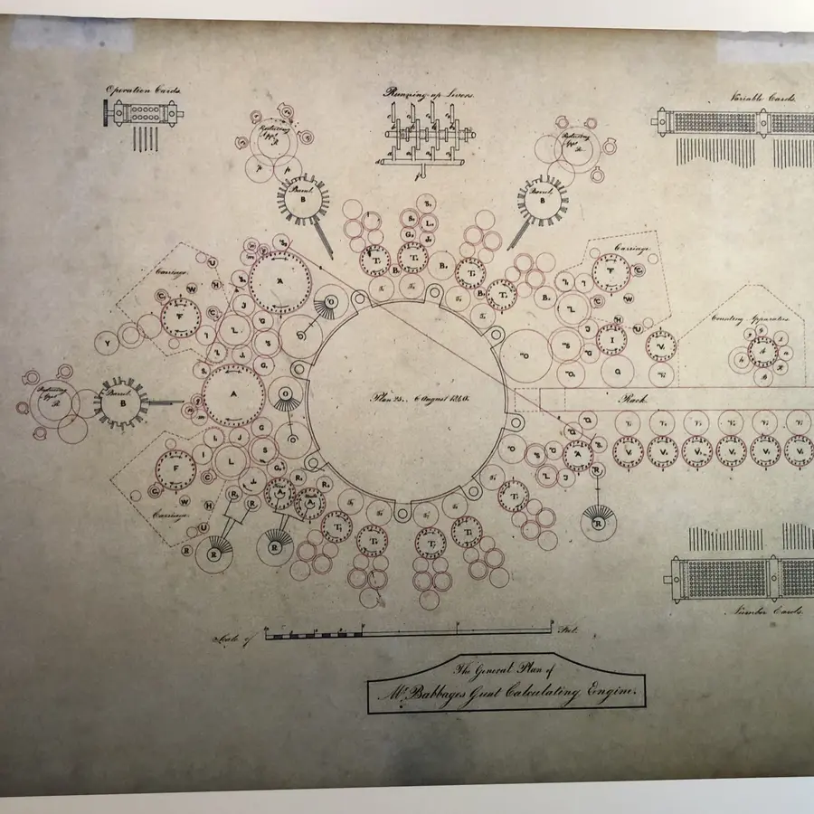
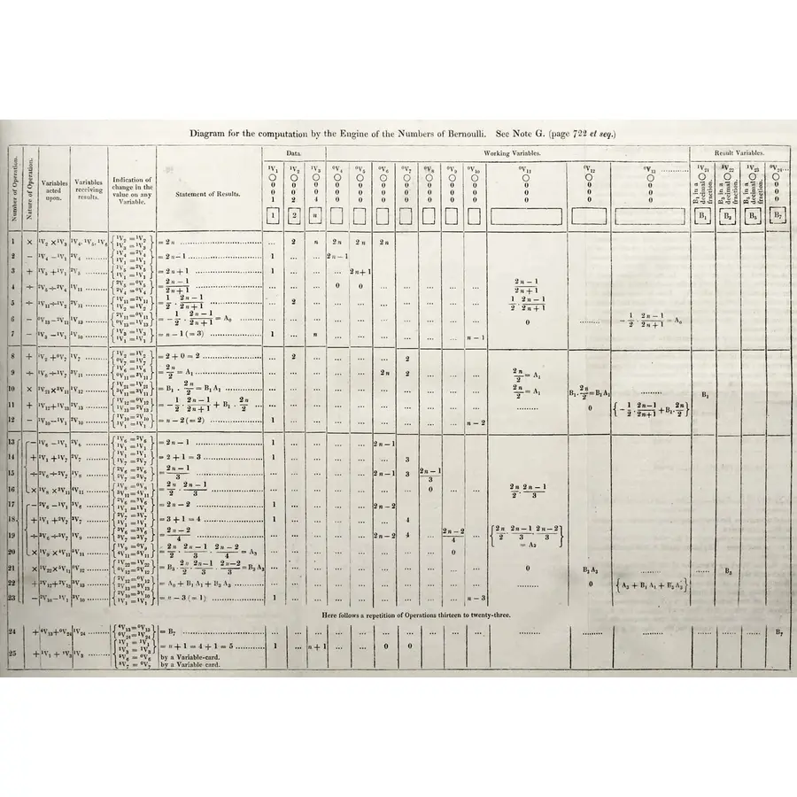

Computer Science · Mathematics · History of Science
Ada Lovelace
Augusta Ada King, Countess of Lovelace, was born in 1815 as the daughter of the poet Lord Byron. She never met a working computer — yet in 1843 she wrote the world's first algorithm: a precise, step-by-step set of instructions intended for Charles Babbage's Analytical Engine. Her notes introduced concepts like loops, subroutines, and the idea that a machine could manipulate symbols beyond mere arithmetic — a vision that predates Alan Turing by nearly a century.
🎯 Your Mission
- Trace data flow: Follow intermediate values across registers and explain why variable reuse is essential to computing memory.
- Spot reusable blocks: Identify subroutines and loops that eliminate redundant mechanical instructions.
- Connect symbol manipulation: Discover how Ada saw beyond number-crunching to universal computing, music, and algorithmic art.
Who Was Ada Lovelace?

Born December 10, 1815 in London, Ada's father was the Romantic poet Lord Byron, who left the family when Ada was one month old. Her mother, Anne Isabella Milbanke, fearful Ada would inherit Byron's "poetic madness," raised her on a strict diet of mathematics and logic — ironically the very discipline that made Ada famous.
At 17, Ada met Charles Babbage at a dinner party and immediately grasped the potential of his Difference Engine — a mechanical calculator. Babbage was so impressed that he introduced her to his plans for the far more ambitious Analytical Engine: a general-purpose mechanical computer with a mill (processor), store (memory), input via punched cards, and output via printer.
In 1842, Italian mathematician Luigi Menabrea published a description of the Analytical Engine in French. Babbage asked Ada to translate it. She did — and added her own notes (labeled A through G) that were nearly three times longer than the original article. Note G contained an algorithm for computing Bernoulli numbers — history's first published computer program.
Ada died of uterine cancer on November 27, 1852, aged 36 — the same age as her father Byron. She was buried beside him at the Church of St. Mary Magdalene in Hucknall, Nottinghamshire. In 1980, the US Department of Defense named its new programming language "Ada" in her honor.
Real Machines, Real Documents
This isn't an abstract story. The man, the machine, and the algorithm all survive — in a photograph, a working replica, and Ada's own handwritten table of instructions. Select any image to enlarge and step through the collection.

The mathematician and inventor who designed the Difference Engine and the Analytical Engine — and who invited Ada into his circle.
Photo: Photographic portrait, 1860 (public domain via Wikimedia Commons)
Built from Babbage's design in 2002, nearly two centuries later — proof his mechanical calculator would have worked. On display in London.
Photo: User:geni, CC BY-SA 4.0 via Wikimedia Commons
Babbage's own drawing of the Analytical Engine, labeling the operation cards, variable cards, and number cards that would program it.
Photo: ArnoldReinhold, CC BY 4.0 via Wikimedia Commons
The actual published table — 25 operations across working variables — that historians recognize as the first computer program.
Source: 1843 publication (public domain via Wikimedia Commons)A Life Ahead of Its Time
- 1815 Born in London; father is poet Lord Byron.
- 1816 Byron leaves; mother raises Ada on a strict curriculum of mathematics and logic.
- 1832 Contracts measles; temporarily paralyzed; spends years bedridden — studies mathematics intensively.
- 1833 Meets Charles Babbage at a dinner party; sees the Difference Engine prototype.
- 1835 Marries William King (later Earl of Lovelace); becomes Countess of Lovelace.
- 1840 Babbage lectures in Turin on the Analytical Engine; Menabrea writes a description in French.
- 1842 Asked to translate Menabrea's paper from French; begins adding her own extensive notes.
- 1843 Publishes translation + Notes A–G; Note G contains the Bernoulli algorithm — the first computer program.
- 1844 Notes describe loops, subroutines, and the idea the machine could compose music.
- 1852 Dies aged 36; buried beside Lord Byron at the Church of St. Mary Magdalene.
- 1980 US Department of Defense names the "Ada" programming language in her honor (MIL-STD-1815).
Watch an idea become an algorithm
Four tickets. Ten dollars each. A six-dollar fee. Two people sharing the bill. Let's teach a machine to find each person's share.
1. Give each value a home
A variable names a stored value. A register is a machine's storage location. The label stays; the number inside can change.
V1 is a location's name, not V × 1. Its current value is 4.
2. Read → calculate → store
An algorithm is a precise, ordered list of instructions. Step through this one and watch its memory change.
Ready · inputs loaded
Predict the ticket cost, then run the first instruction. A dash means no value is stored yet.
How does this look in Python?
v3 = v0 * v1 means calculate v0 times v1, then store the result in v3. Python uses * for multiplication, / for division, and = for assignment. The mathematical equation 10 × 4 = 40 states equality; the program instruction tells the machine what to do.Predict: replace V3 with 7. Does V4 change too?
3. Keep the recipe. Change the inputs.
A function is a reusable calculation that takes inputs and returns a result. These supplied inputs are its arguments. A subroutine is a reusable instruction block; it need not return a value.
Same function, two tickets: predict the new share
The simulator below uses a different five-instruction subroutine. These first three calculations are its opening steps; its remaining steps are memory exercises.
4. Repeat only when the test says “yes”
A loop repeats instructions. In the simulator, the counter n records the pass number. The test n < 2 asks “is n smaller than 2?”
That choice of what happens next is conditional branching.
What if we forget to change n?
What Is an Algorithm — and Why Did It Matter?
An algorithm is a finite, ordered sequence of precise instructions for solving a problem. Ada's 1843 Note G showed in detail how the proposed Analytical Engine could calculate Bernoulli numbers. It connected mathematical rules to operations, storage locations, and repeated steps.
Our simple trace teaches the same kinds of programming ideas using small whole numbers. Once you can explain reading, calculating, storing, and repeating, you are ready to ask what the more advanced mathematics is for.
Most radically, she wrote that the Engine "might act upon other things besides number... supposing, for instance, that the fundamental relations of pitched sounds in the science of harmony and of musical composition were susceptible of such expression... the Engine might compose elaborate and scientific pieces of music." — 1843
What is a Bernoulli number?
Bernoulli numbers are a particular sequence of numbers used in formulas, including formulas for sums of powers such as 1² + 2² + 3². They are not register names. B₂ means “the Bernoulli number at index 2,” not B × 2 or B squared. An index identifies a position in a sequence. A fraction such as 1/6 is one divided by six; −1/2 is negative one-half.
Using the modern convention in our Python reference, B₀ = 1 and B₁ = −1/2. A recurrence is a rule that finds a new sequence value using earlier values. Here is the small case that finds B₂:
B₀ + 3 × B₁ + 3 × B₂ = 0Our rule. B₂ is the unknown; B₀ and B₁ are already known.1 + 3 × (−1/2) + 3 × B₂ = 0Substitute B₀ = 1 and B₁ = −1/2.−1/2 + 3 × B₂ = 0Combine the known terms: 1 − 3/2 = −1/2.3 × B₂ = 1/2Add 1/2 to both sides. The unknown term stands alone.B₂ = (1/2) ÷ 3 = 1/6Divide both sides by 3. Save the result for the next calculation.
The full recurrence handles larger indices with more earlier terms. The key programming task is to keep those earlier values, compute each contribution, add the contributions, and store the new result. You do not need to derive the full formula to understand that process. Ada's historical indexing differs from this modern convention.
Read the 1843 translation and Notes, including Note G. Our worked example and Python below are modern teaching explanations, not a transcription of her operation table.
The Engine's Four Parts — Mapped to a Modern Computer
The Analytical Engine had every major part a computer still has today, just built from brass and steam instead of silicon.
Performed arithmetic on numbers fed to it.
= CPUHeld up to 1,000 numbers of 50 digits each, in columns of gears.
= Memory / RAMFed in the sequence of operations and the data, borrowed from the Jacquard loom.
= Program / InputPlanned to print results directly, removing human transcription error.
= OutputFrom Ada's Notation to Modern Code
Compare our classroom notation with Python. These examples explain programming concepts; they do not reproduce Ada's historical instructions.
| Concept | Classroom notation | Modern Python |
|---|---|---|
| Loop | FOR n FROM 1 TO 8: repeat block |
for n in range(1, 9): |
| Register / Variable | V3 ← V0 × V1 |
v3 = v0 * v1 |
| Conditional Branch | Loop check: n < 8? |
if n < 8: |
| Output | Output: V6 |
print(v6) |
Python's range(1, 9) counts 1 through 8 — it stops before the second number. That's a real, common bug source; you'll see it again in the Practice section below.
Where does the Turing Test connect to this?
Is the Ada programming language still used?
Was the Analytical Engine ever actually built?
Punched Cards: How the Engine Was Programmed
Babbage borrowed his input method from the Jacquard loom, which used punched cards to weave patterns into fabric — a hole let a sensing hook pass through to lift a thread, while solid cardboard blocked it. The Analytical Engine adapted this mechanical principle: punched holes represent 1 (engaged), and blank cardboard represents 0 (unengaged).
Explore both how numbers were encoded into cardboard and how Babbage's cards commanded the Mill to calculate:
Poetical Science: From Arithmetic to Symbols & Music
Ada called her approach "poetical science." While Babbage saw a magnificent machine for calculating mathematical tables, Ada had a profound realization: numbers can represent symbols. If numbers could represent pitches, the Engine could compose music; if numbers could represent weaving levers, it could weave intricate brocades.
Tap holes on the punch strip below to compose a 6-step melodic sequence. As each hole trips, the Engine translates the card's physical pattern into chime frequencies and woven tapestry threads:
Trace It Yourself: Predict the Registers
Before you watch the simulator run, try being the engine. This classroom exercise uses easy inputs rather than computing Bernoulli numbers. Steps 4–8 form the core reusable subroutine (five operations), called twice in the simulator below. The last two rows are extra practice in overwriting and scaling, separate from the simulator’s Steps 9–10.
How to read this table: each row shows memory after that instruction. Only the destination changes; carry the other values forward. A dash means no value has been loaded yet, not zero. Steps 1–3 loaded the three given inputs, so the arithmetic starts at Step 4. For the first blank, read V0 = 10 and V1 = 4, multiply them, and write the result in V3.
For each row, work out the value the operation writes into the register, and type it into the blank. Everything you need is already in the table — either a "given" value above, or a result from an earlier row.
| Step | Operation | V3 | V4 | V5 | V6 | V7 |
|---|---|---|---|---|---|---|
| 4 | V3 ← V0 × V1 | — | — | — | — | |
| 5 | V4 ← V3 + V2 | 40 | — | — | — | |
| 6 | V5 ← V4 / 2 | 40 | 46 | — | — | |
| 7 | V3 ← V1 × V2 | 46 | 23 | — | — | |
| 8 | V6 ← V3 + V5 | 24 | 46 | 23 | — | |
| 9 | V3 ← V2 × V2 | 46 | 23 | 47 | — | |
| 10 | V7 ← V3 / 6 | 36 | 46 | 23 | 47 |
Interactive Analytical Engine — Architectural Trace
A classroom model of the Store (memory), Mill (arithmetic), reusable instructions, and branching. This demonstration uses simple inputs; it does not execute Ada’s historical Bernoulli operation cards.
Predict, test, explain
Guided inquiry
Focus the canvas or card: Space plays/pauses, ←/P restores, →/N advances, R resets. Seeking pauses playback.
| Register | Role | Value | Previous value | Status |
|---|
Printer tape: waiting for derived results.
Steps 4–8 and 11–15 execute the same five instructions with different inputs. Step back restores a saved teaching state; it does not reverse a physical engine.
Modern Exact Bernoulli Recurrence (Python Reference)
This modern calculation uses exact fractions. It is separate from the classroom trace and is not a card-by-card reconstruction of Note G. Odd indices greater than 1 are zero; this function returns B₀, B₁ and even indices.
Advanced reading guide: what do the Python names mean?
B is a collection of saved Bernoulli values; B[j] retrieves the value at index j. limit is the largest index requested. m counts the even-index calculations, and j = 2 * m makes j equal 2, 4, 6, and so on. k selects earlier even-index values.
Fraction(1, 2) stores an exact half. comb(a, b) counts the ways to choose b items from a items; here it supplies a coefficient in the recurrence. sum(...) adds the contributions. acc, short for accumulator, holds their running total. acc += ... adds another contribution to that total. Finally, B[j] = -acc / (j + 1) stores the new number: negate the known total, then divide by its coefficient, just as we solved for B₂ above. return B gives the saved collection back to the caller.
This is a reference to read, not an in-page Python runner. Start with the small worked example before trying to follow the whole function.
Through B₈: 1, −½, ⅙, 0, −1/30, 0, 1/42, 0, −1/30.
Ada's Key Contributions
Note G of her translation described a step-by-step process for computing Bernoulli numbers — the first algorithm intended for execution by a machine, not a human.
Ada described how a sequence of operations could be repeated with updated values — the foundation of every for-loop, while-loop, and recursive function in computing today.
She recognized the Engine could take different action paths based on intermediate results — the origin of if/then/else logic in all programming languages.
Ada foresaw that if numbers could represent musical notes, the Engine could compose music. This is the earliest documented vision of a general-purpose symbolic computer.
She described reusable operation sequences — the concept that became functions, procedures, and methods in all modern software.
The US Department of Defense named its safety-critical programming language Ada in her honor, recognizing her as the mother of software. Ada is still used in aviation, rail, and defense.
Ada Lovelace's Legacy Today
Ada Lovelace Day (second Tuesday of October) celebrates women in STEAM globally, inspired by her legacy. Alan Turing cited Babbage and Lovelace's work in his 1950 paper "Computing Machinery and Intelligence" — the paper that introduced the Turing Test.
Every modern programming concept — variables, loops, conditionals, subroutines — traces conceptually to Ada's 1843 notes. The separation of hardware and software (the Engine could run any algorithm on punched cards) is Ada's most profound insight — 100 years before von Neumann architecture.
Ada grasped that the Analytical Engine's punched-card programs were separate from the machine — the first conception of software as distinct from hardware. This idea, that the same machine could be reprogrammed to solve any problem, is the founding principle of every computer ever built.
Ada's Note G computed each new Bernoulli number by summing across all prior values. Computing \(n\) values takes \(1 + 2 + \dots + n = O(n^2)\) operations — making memory reuse and caching (memoization) vital.
Practice Problems
Completed: 0 / 9Think about algorithms, loops, and the history of computing.
Easy1. In what year did Ada Lovelace publish the world's first algorithm?
Easy2. What programming concept did Ada describe as repeating a sequence of operations with updated values?
Medium3. An algorithm has 3 nested loops each running n = 10 times. How many total operations are executed? (Hint: 10 × 10 × 10 = ?)
Medium4. Ada's Note G computed which mathematical sequence?
Challenge5. Which of these is closest to Ada's most radical insight about the Analytical Engine?
Medium6. On an 8-hole punched card, holes 1, 3, and 8 are punched — all others are left blank. Hole 1 = 128, hole 2 = 64, hole 3 = 32, hole 4 = 16, hole 5 = 8, hole 6 = 4, hole 7 = 2, hole 8 = 1. What decimal number does this card represent?
Easy7. Which part of the Analytical Engine is the direct ancestor of a modern computer's RAM (memory)?
Debug8. This code should copy Step 4 of the algorithm — with V0 = 10 and V1 = 4, it should produce 40. Instead, it produces 14: v3 = v0 + v1. What's the bug?
Debug9. This loop should compute all 8 Bernoulli numbers (n = 1 through 8), but it only computes 7: for n in range(1, 8):. In Python, range(1, 8) produces 1, 2, 3, 4, 5, 6, 7 — it stops before the second number. What's the fix?